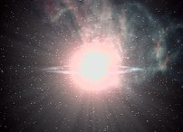
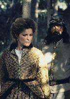
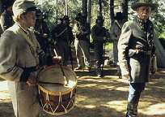
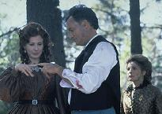
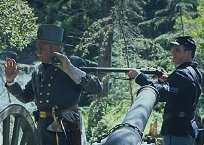

|
MANCHETE
DO EPISDIO
Janeway interfere em guerra dos Q e
quase vira a "primeira-dama do cosmo"
Episdio
anterior | Prximo
episdio
Sinopse:
Data
Estelar: 50384.2
 Depois
que a tripulao da Voyager testemunha de perto uma supernova, fenmeno
que acontece apenas uma vez a cada sculo nesta galxia, Q aparece
nos alojamentos da capit com uma proposta: ele quer que ela
carregue seu beb. Janeway recusa de cara, mas Q persistente.
Ele reaparece diversas vezes, e, embora Janeway admita que gostaria
de ter um filho algum dia, ela afirma que no ser com ele o
que deixa aliviada uma ciumenta mulher Q que aparece na nave .
Depois que a tripulao assiste a
uma terceira supernova, eles comeam a suspeitar que Q pode estar
por trs das exploses. Temendo o impacto que as ondas de choque
do fenmeno csmico teriam sobre a Voyager, Janeway pede a Q que
faa algo a respeito. Como resposta, ele transporta a capit para
a Dimenso Q, que desta vez se manifesta como as colnias do sul
dos Estados Unidos em plena Guerra Civil.
O conflito uma repercusso da morte de Quinn,
o Q que cometeu o suicdio a bordo da Voyager um ano antes. Sua
morte trouxe o caos Dimenso. Agora o status quo dos Q
luta uma sangrenta batalha contra os Q que, como Quinn, acreditavam
no individualismo. Um dos efeitos do conflito a freqncia
pouco convencional das supernovas, causadas pelas descontinuidades
espaciais na Dimenso. Para acabar com a guerra, Q decidiu criar
uma nova linhagem de Qs, que incorporaria as melhores qualidades
humanas.
 Na
Voyager, Chakotay pergunta mulher Q sobre a guerra e eles
concordam em unir foras. Ela ajuda a nave a entrar na Dimenso,
onde Janeway encoraja Q a associar-se com a mulher Q. Enquanto ele
considera a idia, Janeway visita o campo inimigo para discutir o
cessar-fogo. Em nome de Q, ela oferece uma trgua, mas o coronel
opositor decide pr fim ao conflito executando Q -- e sentenciando
a capit morte por colaborar com o inimigo.
Encarando o batalho, Q declara a
inocncia de Janeway e pede que a vida dela seja poupada. O coronel
ignora o pedido, mas uma cavalaria -- formada pela tripulao da
Voyager e a mulher Q -- vem para o resgate. Q acaba concordando com
a idia de Janeway e pede mulher Q que conceba o seu filho. Eles
se tocam com a ponta dos dedos e a paz reina novamente na Dimenso.
Mais tarde, Q visita a capit com seu filho, e pede que ela seja a
madrinha da criana.
Comentrios:
Qualquer episdio de Jornada
em que John de Lancie aparece como o instvel Q est condenado a
ser bom entretenimento. "The Q and the Grey" no
foi diferente. Alis, teve sim uma diferena. O humor tambm
dominou o set de filmagens -- lembrando que Kate Mulgrew e De Lancie
so amigos de longa data. A produo sucedeu com mais
naturalidade.
 O
primeiro mrito da histria -- alm, claro, da atuao de de
Lancie, que dispensa maiores comentrios -- a continuidade que
estabelece com o clssico episdio "Death
Wish", da temporada anterior. E foi feito um bom
trabalho. Os roteiristas mostraram a repercusso que a morte de
Quinn, o Q que cometeu o suicdio a bordo da Voyager, teve sobre a
Dimenso Q. A idia da linguagem figurada para representar a
Dimenso um bom artifcio que a produo escolheu para no
ter que desvendar o que se passa l. Mas, claro, eles tinham que
represent-la como a Guerra Civil dos Estados Unidos...
 O
roteiro se dividiu em duas tramas principais: a luta pelos direitos
do indivduo na Dimenso, e as intenes romnticas de Q para
com a capit. a que a histria se perde. Que Q sempre se
intrigou com a humanidade no h dvidas, motivo que justificaria
a escolha de Janeway como me de seu filho. Agora, os motivos por
que queria ter uma criana no so convincentes. Como um ser
onipotente e onipresente no saberia que as chamadas "melhores
qualidades humanas" no se tratam de determinismo biolgico?
Q sabe, mais do que ningum, que a humanidade se tornou o que
pelo aprendizado de sculos, e no por causa de seu DNA. Qualquer
ser de uma "espcie intelectualmente limitada" -- como
insistia em dizer a mulher Q, referindo-se aos humanos -- saberia
disso.
Tambm no fica exatamente claro
como a Voyager entra na Dimenso Q por meio da exploso de uma
supernova. A boa e velha "tecnobaboseira" deve se
encarregar da resposta.

por isso que a ateno deve ser dada carga humorstica da histria.
Sobretudo, a interao entre Q e Janeway, e a mulher Q e a tripulao
da Voyager. O casal da semana vive momentos hilrios principalmente
no comeo do episdio, quando Q tenta cortejar a capit com
presentes e palavras. As cenas da "namorada" de Q com
Chakotay, Tuvok e B'Elanna tambm estiveram entre as melhores. A
mulher sempre tentava rebaix-los com seu ar de superioridade, mas
acabava tendo que se calar.
 Engraada
tambm -- mas pouco plausvel -- foi a participao da tripulao
da Voyager na batalha dos Q. Engraado foi ver Tuvok, com suas
orelhas e sobrancelhas vulcanas em um uniforme militar
norte-americano do sculo 19, e Paris rendendo o coronel Q. Mas foi
pouco plausvel ver um grupo de humanos amedrontando a poderosa
Dimenso Q, que at ento mostrava qualidades divinas. Isto no
entanto passa a ser uma tendncia em Voyager a partir da
terceira temporada: o enfrentamento direto e destemido dos inimigos
mais ferozes da Federao, por exemplo os Borgs. Engraada
tambm -- mas pouco plausvel -- foi a participao da tripulao
da Voyager na batalha dos Q. Engraado foi ver Tuvok, com suas
orelhas e sobrancelhas vulcanas em um uniforme militar
norte-americano do sculo 19, e Paris rendendo o coronel Q. Mas foi
pouco plausvel ver um grupo de humanos amedrontando a poderosa
Dimenso Q, que at ento mostrava qualidades divinas. Isto no
entanto passa a ser uma tendncia em Voyager a partir da
terceira temporada: o enfrentamento direto e destemido dos inimigos
mais ferozes da Federao, por exemplo os Borgs.
Enfim, ao final da histria a paz
restaurada no universo e a capit sai como herona, e madrinha de
um Q -- algo que tambm ter uma repercusso, no ltimo ano da srie.
S no d para entender outras duas coisas. A primeira por que
a Voyager ainda est no quadrante Delta. O mnimo que os Q
poderiam ter feito t-los mandado de volta para casa como sinal
de gratido. O outro ponto so os comentrios de Janeway no
acampamento, enquanto cuidava de Q, quando disse que a tripulao
no buscava um conserto rpido para sua situao, mas queria
chegar em casa atravs de trabalho rduo e determinao. Isto
contradiz muito do que foi dito na srie, e muito do que ser
feito tambm.
Citaes:
Q - "Out of all the females,
of all the species, in all the galaxies, I have chosen you to be the
mother of my child."
("De todas as fmeas, de todas as espcies, em todas as
galxias, eu a escolhi para ser a me do meu filho.")
Janeway - "Sorry, but I'm
busy for the next 60 or 70 years."
("Desculpe, mas estou ocupada pelos prximos 60 ou 70
anos.")
mulher Q - "What are you
doing with that dog? I'm not talking about the puppy."
("O que voc est fazendo com aquela cadela? Eu no
estou falando do filhote.")
mulher Q - "The Vulcan talent
for stating the obvious never ceases to amaze me."
("O talento vulcano de afirmar o bvio nunca deixa de me
surpreender.")
B'Elanna - "Well, here's
another fact: if don't stop pastring me, I'm never going to finish.
In which case your eternal association with Q might not be quite
eternal as you think."
("Bom, eis um outro fato: se voc no parar de me
atormentar, eu nunca vou terminar. Nesse caso a sua associao
eterna com o Q no ser to eterna quanto pensa.")
mulher Q - "You know I've always liked Klingon females. You've
got such... spunk."
("Sabe, eu sempre gostei das mulheres Klingon. Vocs tm
tanta... coragem.")
Trivia:
 O episdio mostra a repercusso da morte de Quinn --a entidade que
se tornou mortal a bordo da Voyager em "Death
Wish"-- sobre a Dimenso Q.
O episdio mostra a repercusso da morte de Quinn --a entidade que
se tornou mortal a bordo da Voyager em "Death
Wish"-- sobre a Dimenso Q.
Esta a segunda apario de John de Lancie (Q) em Voyager;
na stima e ltima temporada da srie o ator retorna para a sua
ltima participao em Jornada.
Ficha
tcnica:
Histria de Shawn Piller
Roteiro de Kenneth Biller
Direo de Cliff Bole
Exibido em 27/11/1996
Produo: 053
Elenco:
Kate Mulgrew como
Kathryn Janeway
Robert Beltran como Chakotay
Roxann Biggs-Dawson como B'Elanna Torres
Robert Duncan McNeill como Tom Paris
Jennifer Lien como Kes
Ethan Phillips como Neelix
Robert Picardo como Doutor
Tim Russ como Tuvok
Garrett Wang como Harry Kim
Elenco convidado:
John de Lancie como Q
Suzie Plakson como mulher Q
Harve Presnell como coronel Q
Episdio
anterior | Prximo
episdio
|